Gallery
Trinity Express fleet, interiors, terminals, and passenger amenities
Explore real Trinity Express fleet, terminal, seating, cabin, charging, and customer-service photographs.

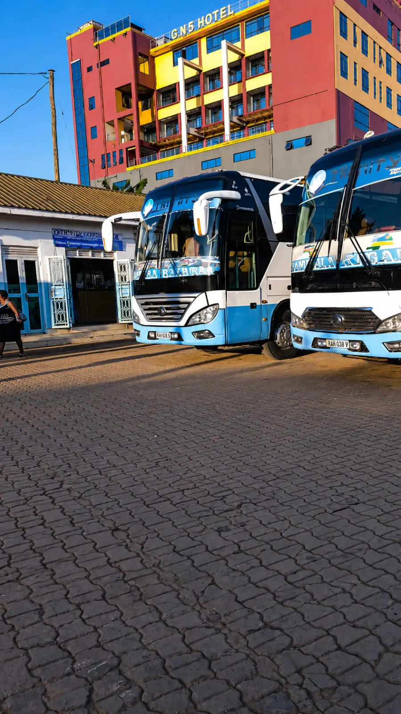
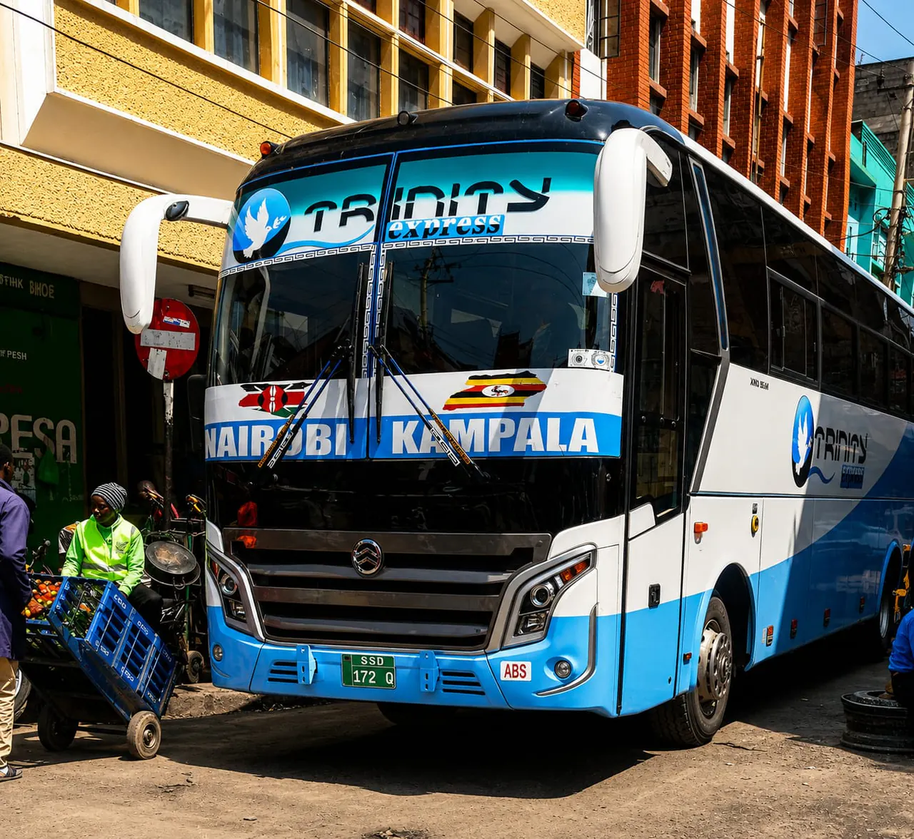

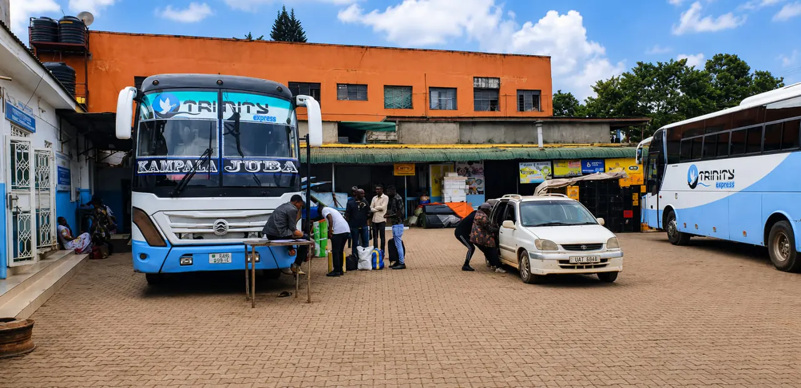
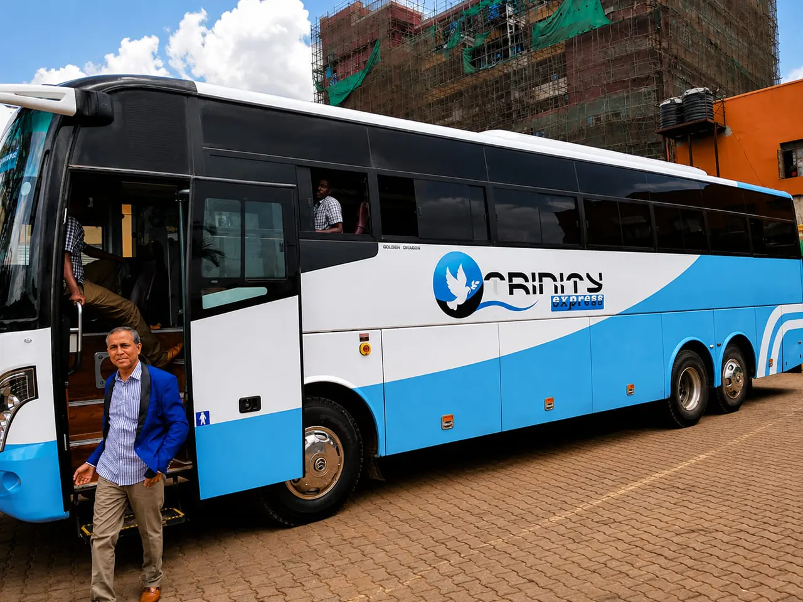
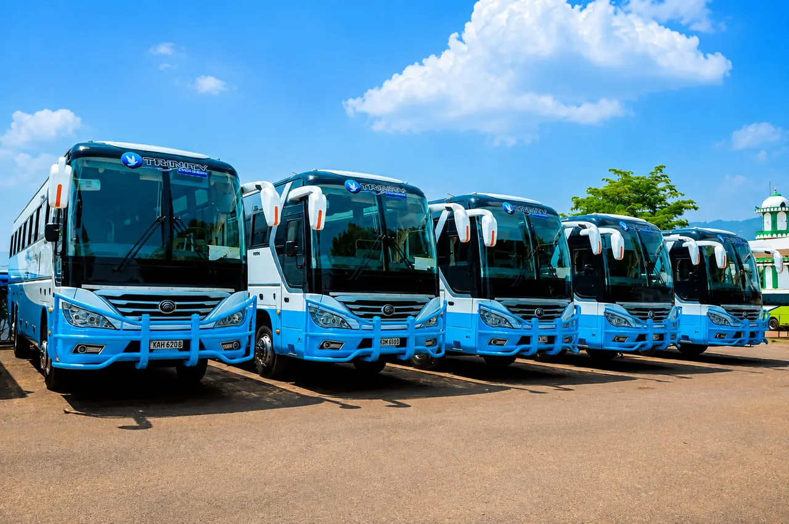

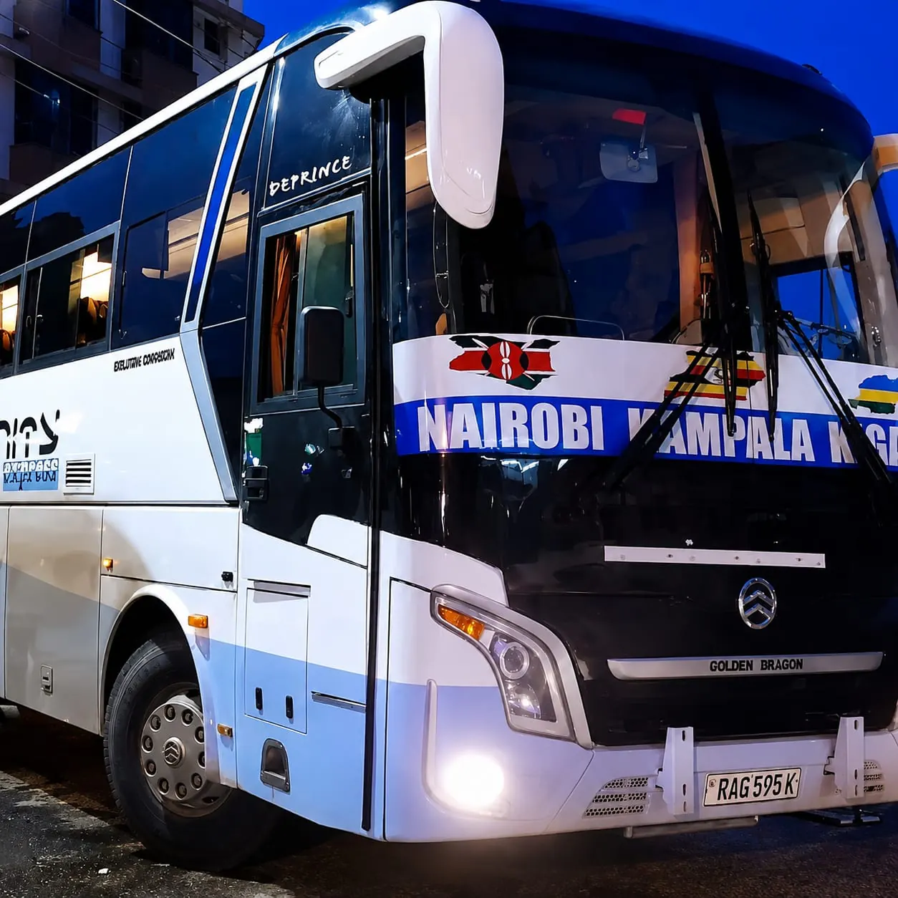
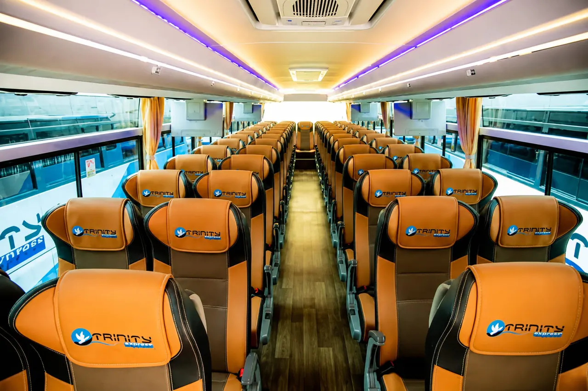

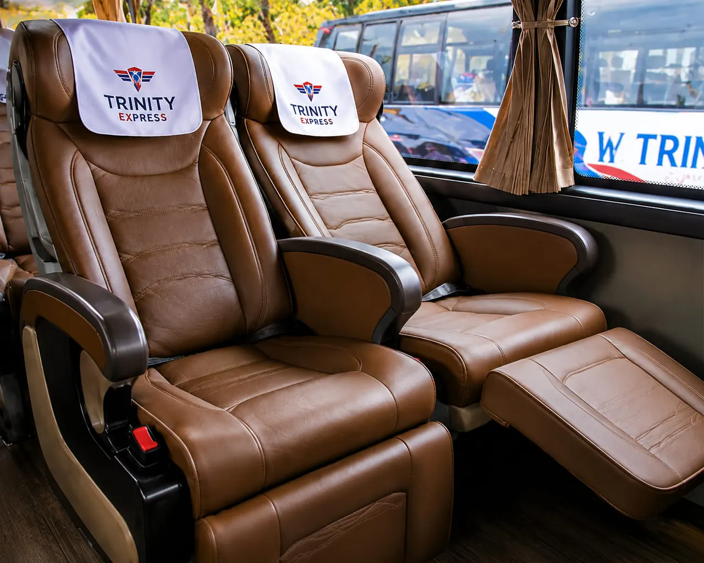
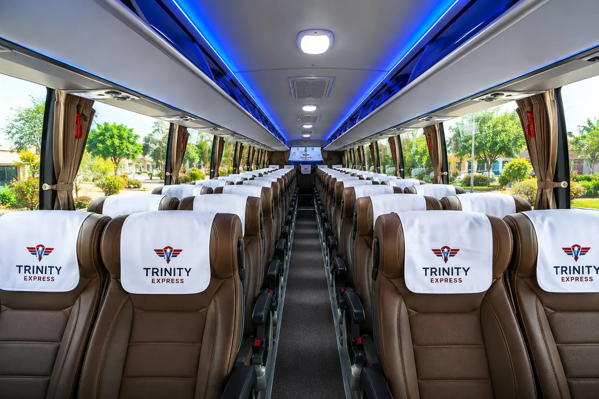
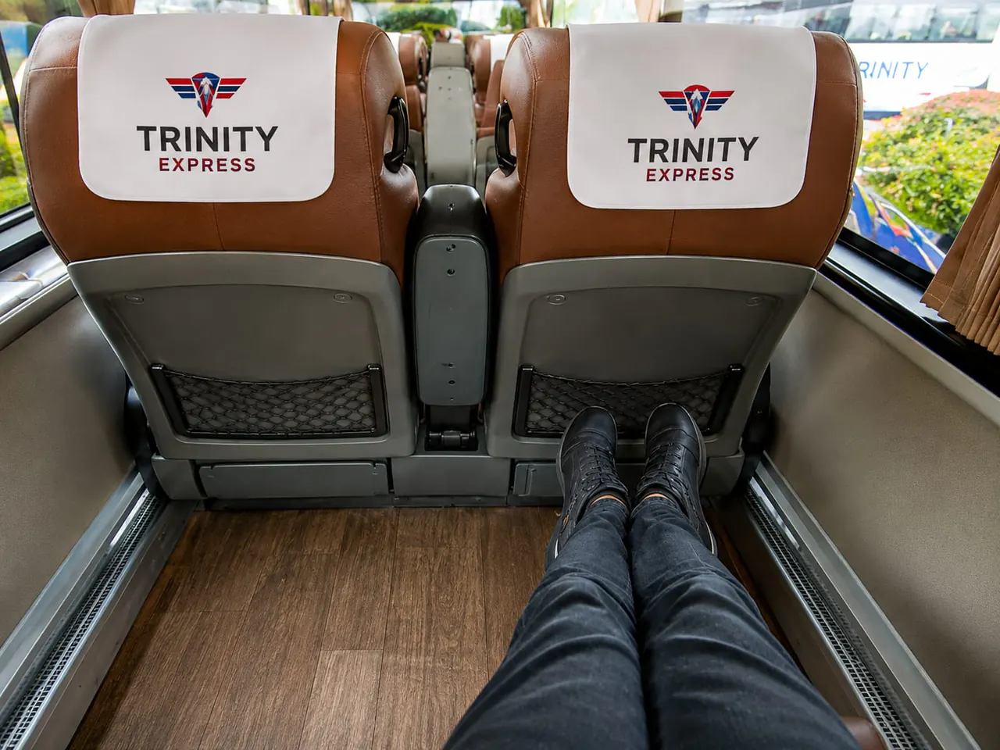
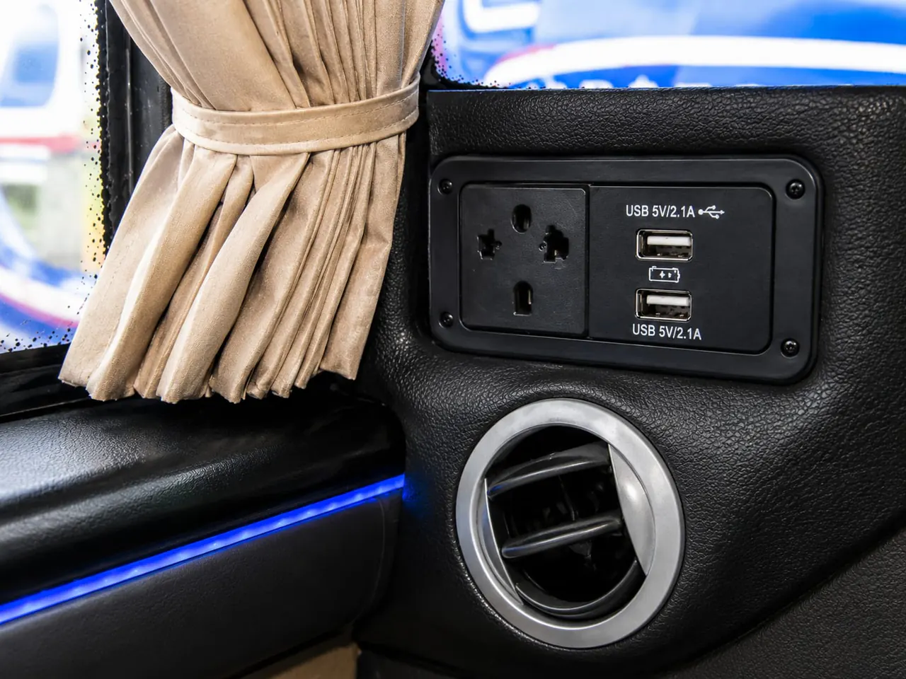
Booking and travel reminders
Are prices on this page final?
No. Prices shown by Trinity Bus Express are estimates until verified during booking.
Does a WhatsApp message confirm a seat?
No. A booking becomes confirmed only after Trinity Bus Express verifies seat availability and payment.
Where should passengers verify cross-border requirements?
Passengers should verify passport, visa, customs and health requirements with the relevant official authorities before travel.